複数 before / after candidate rank の再現性確認
これは候補rankの探索的比較です。rankを承認済みペアへ昇格する処理ではありません。 画像上の記述指標であり、乾燥・シワの診断、物理的なシワ深さ、メイク効果の因果推定ではありません。 各候補は必ず画像を目視し、表情・照明・ピント・圧縮・手や道具の影響を確認してください。
候補再生成: before / after の同一フレーム再利用は禁止 ／ ペア全体が近い場合のみ diversity 3.0秒で抑制 ／ 最大 80件 ／ 品質条件通過 281組 ／ unique before 34枚 ／ unique after 15枚 ／ endpointのみの最大マッチング 15組 ／ 貪欲法で選択 14組。 別フレームであれば片側の時刻が近い候補は許可します。顔サイズ・手重なりの閾値は変更していません。
rank横断の主要差分
値は after - before。正負の方向がrank間で再現するかを確認します。
| rank | before → after | 画面左眉下の皮膚の細かな質感コントラスト（中央値） | 画面左眉下の皮膚の細かな質感コントラスト（p90） | 画面右眉下の皮膚の細かな質感コントラスト（中央値） | 画面右眉下の皮膚の細かな質感コントラスト（p90） | 画面左ほうれい線候補の周囲皮膚比・暗さコントラスト（p90） | 画面右ほうれい線候補の周囲皮膚比・暗さコントラスト（p90） |
|---|---|---|---|---|---|---|---|
| 1 | 240.99s → 1403.49s | +0.766 | +2.449 | +0.596 | +2.265 | +4.177 | -7.371 |
| 2 | 222.51s → 1410.99s | +0.235 | +2.452 | +0.179 | +0.934 | +5.631 | -9.976 |
| 3 | 223.01s → 1402.98s | +0.491 | +1.884 | +0.347 | +1.756 | +6.668 | -9.655 |
| 4 | 216.01s → 1408.99s | -0.073 | -0.035 | -0.070 | -0.161 | +5.729 | -5.955 |
| 5 | 230.98s → 1404.99s | +0.884 | +4.602 | +0.779 | +4.270 | +5.330 | -5.996 |
| 6 | 212.50s → 1406.99s | +0.088 | +1.301 | +0.331 | +1.315 | +4.140 | -6.418 |
| 7 | 228.02s → 1411.99s | +0.006 | -0.029 | -0.029 | -0.285 | +3.921 | -5.764 |
| 8 | 222.01s → 1407.99s | +0.501 | +2.266 | +0.409 | +1.824 | +6.087 | -6.733 |
| 9 | 216.51s → 1412.99s | +0.014 | +0.524 | -0.040 | -0.249 | +9.625 | -4.128 |
| 10 | 227.02s → 1401.98s | +0.235 | +0.728 | +0.080 | +0.295 | +6.613 | -5.837 |
| 11 | 213.00s → 1409.99s | +0.024 | +1.051 | +0.017 | +0.310 | +1.569 | -5.730 |
| 12 | 211.00s → 1402.48s | +0.063 | -0.238 | +0.018 | -0.119 | +8.889 | -8.912 |
| 13 | 221.01s → 1418.00s | -0.092 | -0.593 | +0.043 | +0.055 | -0.476 | +2.110 |
| 14 | 238.99s → 1421.00s | -0.176 | +0.030 | -0.011 | -0.037 | -7.146 | -6.962 |
眉下の皮膚の質感・ほうれい線候補 / rank 1
score 0.9303 ／ before 240.99s → after 1403.49s
顔サイズ比 1.0031 ／ 手の重なり before 0.00% / after 0.00%
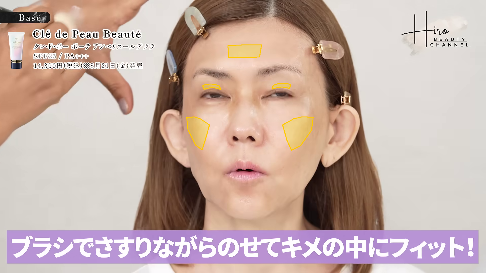

| 指標 | 単位 | before | after | 差 | 状態 |
|---|---|---|---|---|---|
| 画面左眉下の皮膚の細かな質感コントラスト（中央値） | 局所L*比 % | 0.201 | 0.966 | +0.766 | ok |
| 画面左眉下の皮膚の細かな質感コントラスト（p90） | 局所L*比 % | 0.783 | 3.232 | +2.449 | ok |
| 画面右眉下の皮膚の細かな質感コントラスト（中央値） | 局所L*比 % | 0.145 | 0.742 | +0.596 | ok |
| 画面右眉下の皮膚の細かな質感コントラスト（p90） | 局所L*比 % | 0.489 | 2.754 | +2.265 | ok |
| 画面左頬の細かな質感コントラスト（中央値・対照） | 局所L*比 % | 0.138 | 0.257 | +0.118 | ok |
| 画面左頬の細かな質感コントラスト（p90・対照） | 局所L*比 % | 0.356 | 0.901 | +0.545 | ok |
| 画面右頬の細かな質感コントラスト（中央値・対照） | 局所L*比 % | 0.120 | 0.194 | +0.074 | ok |
| 画面右頬の細かな質感コントラスト（p90・対照） | 局所L*比 % | 0.316 | 0.594 | +0.278 | ok |
| 額の細かな質感コントラスト（中央値・対照） | 局所L*比 % | 0.048 | 0.085 | +0.037 | ok |
| 額の細かな質感コントラスト（p90・対照） | 局所L*比 % | 0.192 | 0.313 | +0.121 | ok |
| 画面左眉下の皮膚のSEsc-inspired bright-scaliness率 | % | 0.000 | 0.000 | +0.000 | ok |
| 画面右眉下の皮膚のSEsc-inspired bright-scaliness率 | % | 0.000 | 0.000 | +0.000 | ok |
| 画面左頬・対照のSEsc-inspired bright-scaliness率 | % | 0.000 | 0.000 | +0.000 | ok |
| 画面右頬・対照のSEsc-inspired bright-scaliness率 | % | 0.000 | 0.000 | +0.000 | ok |
| 額・対照のSEsc-inspired bright-scaliness率 | % | 0.000 | 0.000 | +0.000 | ok |
| 画面左眉下の皮膚のGVR-inspired皮膚水分反射比 | ratio | 2.851e-07 | 7.264e-07 | +4.413e-07 | ok |
| 画面右眉下の皮膚のGVR-inspired皮膚水分反射比 | ratio | 1.378e-08 | 8.286e-07 | +8.148e-07 | ok |
| 画面左頬・対照のGVR-inspired皮膚水分反射比 | ratio | 1.470e-06 | 3.931e-07 | -1.077e-06 | ok |
| 画面右頬・対照のGVR-inspired皮膚水分反射比 | ratio | 5.976e-07 | 1.423e-07 | -4.554e-07 | ok |
| 額・対照のGVR-inspired皮膚水分反射比 | ratio | 1.993e-07 | 0.000 | -1.993e-07 | ok |
| 画面左ほうれい線候補の周囲皮膚比・暗さコントラスト（中央値） | 局所L*比 % | 0.000 | 0.000 | +0.000 | ok |
| 画面左ほうれい線候補の周囲皮膚比・暗さコントラスト（p90） | 局所L*比 % | 5.067 | 9.244 | +4.177 | ok |
| 画面右ほうれい線候補の周囲皮膚比・暗さコントラスト（中央値） | 局所L*比 % | 0.000 | 0.000 | +0.000 | ok |
| 画面右ほうれい線候補の周囲皮膚比・暗さコントラスト（p90） | 局所L*比 % | 10.190 | 2.819 | -7.371 | ok |
眉下の皮膚の質感・ほうれい線候補 / rank 2
score 1.1004 ／ before 222.51s → after 1410.99s
顔サイズ比 1.0136 ／ 手の重なり before 0.00% / after 0.00%

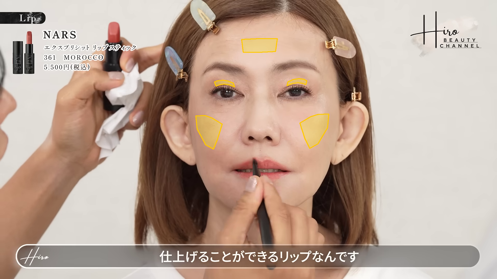
| 指標 | 単位 | before | after | 差 | 状態 |
|---|---|---|---|---|---|
| 画面左眉下の皮膚の細かな質感コントラスト（中央値） | 局所L*比 % | 0.242 | 0.477 | +0.235 | ok |
| 画面左眉下の皮膚の細かな質感コントラスト（p90） | 局所L*比 % | 0.868 | 3.320 | +2.452 | ok |
| 画面右眉下の皮膚の細かな質感コントラスト（中央値） | 局所L*比 % | 0.176 | 0.354 | +0.179 | ok |
| 画面右眉下の皮膚の細かな質感コントラスト（p90） | 局所L*比 % | 0.759 | 1.694 | +0.934 | ok |
| 画面左頬の細かな質感コントラスト（中央値・対照） | 局所L*比 % | 0.166 | 0.185 | +0.019 | ok |
| 画面左頬の細かな質感コントラスト（p90・対照） | 局所L*比 % | 0.517 | 0.562 | +0.046 | ok |
| 画面右頬の細かな質感コントラスト（中央値・対照） | 局所L*比 % | 0.140 | 0.119 | -0.021 | ok |
| 画面右頬の細かな質感コントラスト（p90・対照） | 局所L*比 % | 0.409 | 0.351 | -0.058 | ok |
| 額の細かな質感コントラスト（中央値・対照） | 局所L*比 % | 0.086 | 0.072 | -0.014 | ok |
| 額の細かな質感コントラスト（p90・対照） | 局所L*比 % | 0.344 | 0.250 | -0.095 | ok |
| 画面左眉下の皮膚のSEsc-inspired bright-scaliness率 | % | 0.000 | 0.000 | +0.000 | ok |
| 画面右眉下の皮膚のSEsc-inspired bright-scaliness率 | % | 0.000 | 0.000 | +0.000 | ok |
| 画面左頬・対照のSEsc-inspired bright-scaliness率 | % | 0.000 | 0.000 | +0.000 | ok |
| 画面右頬・対照のSEsc-inspired bright-scaliness率 | % | 0.000 | 0.000 | +0.000 | ok |
| 額・対照のSEsc-inspired bright-scaliness率 | % | 0.000 | 0.000 | +0.000 | ok |
| 画面左眉下の皮膚のGVR-inspired皮膚水分反射比 | ratio | 1.446e-06 | 1.534e-07 | -1.293e-06 | ok |
| 画面右眉下の皮膚のGVR-inspired皮膚水分反射比 | ratio | 6.727e-07 | 1.964e-07 | -4.763e-07 | ok |
| 画面左頬・対照のGVR-inspired皮膚水分反射比 | ratio | 9.685e-07 | 6.652e-07 | -3.033e-07 | ok |
| 画面右頬・対照のGVR-inspired皮膚水分反射比 | ratio | 6.171e-07 | 1.611e-07 | -4.560e-07 | ok |
| 額・対照のGVR-inspired皮膚水分反射比 | ratio | 7.292e-09 | 0.000 | -7.292e-09 | ok |
| 画面左ほうれい線候補の周囲皮膚比・暗さコントラスト（中央値） | 局所L*比 % | 0.000 | 0.000 | +0.000 | ok |
| 画面左ほうれい線候補の周囲皮膚比・暗さコントラスト（p90） | 局所L*比 % | 3.550 | 9.181 | +5.631 | ok |
| 画面右ほうれい線候補の周囲皮膚比・暗さコントラスト（中央値） | 局所L*比 % | 0.000 | 0.000 | +0.000 | ok |
| 画面右ほうれい線候補の周囲皮膚比・暗さコントラスト（p90） | 局所L*比 % | 12.285 | 2.309 | -9.976 | ok |
眉下の皮膚の質感・ほうれい線候補 / rank 3
score 1.1386 ／ before 223.01s → after 1402.98s
顔サイズ比 1.0049 ／ 手の重なり before 0.00% / after 0.00%
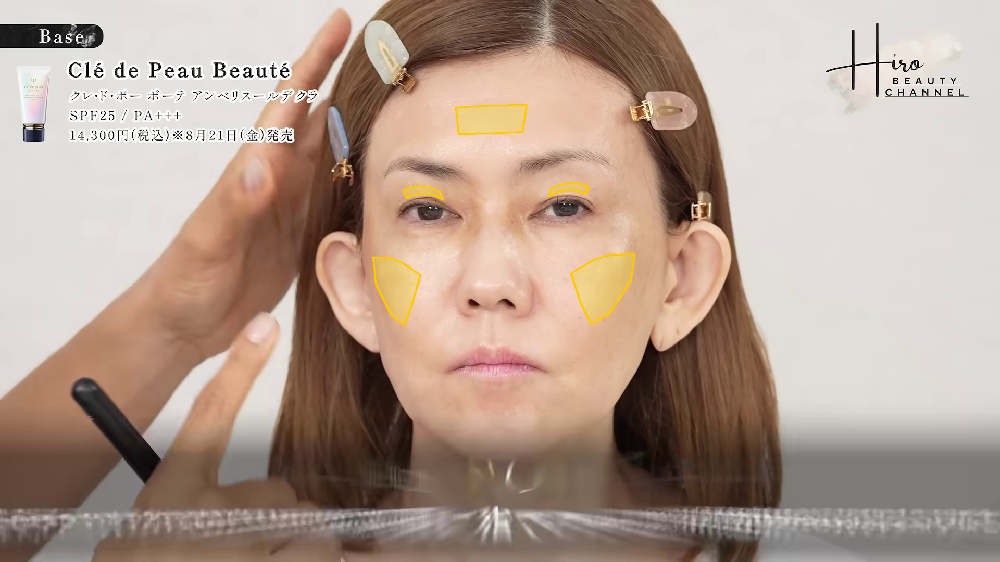
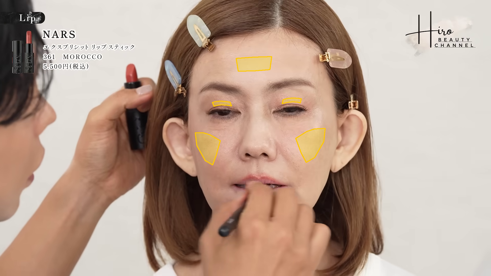
| 指標 | 単位 | before | after | 差 | 状態 |
|---|---|---|---|---|---|
| 画面左眉下の皮膚の細かな質感コントラスト（中央値） | 局所L*比 % | 0.235 | 0.726 | +0.491 | ok |
| 画面左眉下の皮膚の細かな質感コントラスト（p90） | 局所L*比 % | 0.742 | 2.626 | +1.884 | ok |
| 画面右眉下の皮膚の細かな質感コントラスト（中央値） | 局所L*比 % | 0.161 | 0.509 | +0.347 | ok |
| 画面右眉下の皮膚の細かな質感コントラスト（p90） | 局所L*比 % | 0.463 | 2.218 | +1.756 | ok |
| 画面左頬の細かな質感コントラスト（中央値・対照） | 局所L*比 % | 0.178 | 0.261 | +0.084 | ok |
| 画面左頬の細かな質感コントラスト（p90・対照） | 局所L*比 % | 0.605 | 0.842 | +0.237 | ok |
| 画面右頬の細かな質感コントラスト（中央値・対照） | 局所L*比 % | 0.167 | 0.195 | +0.028 | ok |
| 画面右頬の細かな質感コントラスト（p90・対照） | 局所L*比 % | 0.454 | 0.564 | +0.110 | ok |
| 額の細かな質感コントラスト（中央値・対照） | 局所L*比 % | 0.089 | 0.079 | -0.010 | ok |
| 額の細かな質感コントラスト（p90・対照） | 局所L*比 % | 0.373 | 0.301 | -0.072 | ok |
| 画面左眉下の皮膚のSEsc-inspired bright-scaliness率 | % | 0.000 | 0.000 | +0.000 | ok |
| 画面右眉下の皮膚のSEsc-inspired bright-scaliness率 | % | 0.000 | 0.000 | +0.000 | ok |
| 画面左頬・対照のSEsc-inspired bright-scaliness率 | % | 0.000 | 0.000 | +0.000 | ok |
| 画面右頬・対照のSEsc-inspired bright-scaliness率 | % | 0.000 | 0.000 | +0.000 | ok |
| 額・対照のSEsc-inspired bright-scaliness率 | % | 0.000 | 0.000 | +0.000 | ok |
| 画面左眉下の皮膚のGVR-inspired皮膚水分反射比 | ratio | 1.823e-06 | 9.257e-07 | -8.970e-07 | ok |
| 画面右眉下の皮膚のGVR-inspired皮膚水分反射比 | ratio | 5.747e-07 | 7.701e-07 | +1.954e-07 | ok |
| 画面左頬・対照のGVR-inspired皮膚水分反射比 | ratio | 2.129e-07 | 5.417e-07 | +3.289e-07 | ok |
| 画面右頬・対照のGVR-inspired皮膚水分反射比 | ratio | 7.037e-07 | 1.490e-07 | -5.547e-07 | ok |
| 額・対照のGVR-inspired皮膚水分反射比 | ratio | 3.139e-09 | 0.000 | -3.139e-09 | ok |
| 画面左ほうれい線候補の周囲皮膚比・暗さコントラスト（中央値） | 局所L*比 % | 0.000 | 0.000 | +0.000 | ok |
| 画面左ほうれい線候補の周囲皮膚比・暗さコントラスト（p90） | 局所L*比 % | 3.567 | 10.235 | +6.668 | ok |
| 画面右ほうれい線候補の周囲皮膚比・暗さコントラスト（中央値） | 局所L*比 % | 0.000 | 0.000 | +0.000 | ok |
| 画面右ほうれい線候補の周囲皮膚比・暗さコントラスト（p90） | 局所L*比 % | 12.410 | 2.755 | -9.655 | ok |
眉下の皮膚の質感・ほうれい線候補 / rank 4
score 1.1850 ／ before 216.01s → after 1408.99s
顔サイズ比 1.0123 ／ 手の重なり before 0.00% / after 0.00%
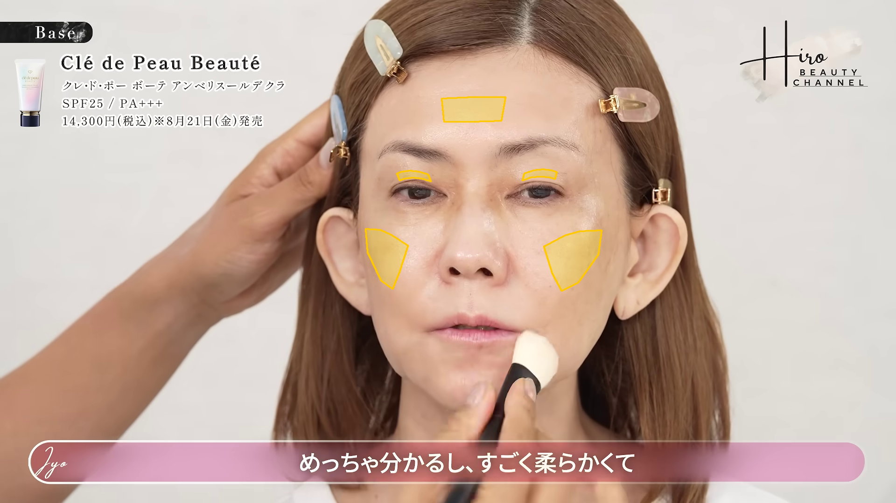
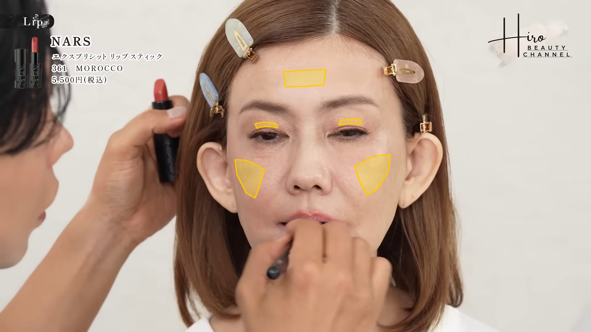
| 指標 | 単位 | before | after | 差 | 状態 |
|---|---|---|---|---|---|
| 画面左眉下の皮膚の細かな質感コントラスト（中央値） | 局所L*比 % | 0.359 | 0.286 | -0.073 | ok |
| 画面左眉下の皮膚の細かな質感コントラスト（p90） | 局所L*比 % | 1.439 | 1.404 | -0.035 | ok |
| 画面右眉下の皮膚の細かな質感コントラスト（中央値） | 局所L*比 % | 0.317 | 0.247 | -0.070 | ok |
| 画面右眉下の皮膚の細かな質感コントラスト（p90） | 局所L*比 % | 1.145 | 0.985 | -0.161 | ok |
| 画面左頬の細かな質感コントラスト（中央値・対照） | 局所L*比 % | 0.160 | 0.168 | +0.008 | ok |
| 画面左頬の細かな質感コントラスト（p90・対照） | 局所L*比 % | 0.481 | 0.492 | +0.011 | ok |
| 画面右頬の細かな質感コントラスト（中央値・対照） | 局所L*比 % | 0.169 | 0.116 | -0.054 | ok |
| 画面右頬の細かな質感コントラスト（p90・対照） | 局所L*比 % | 0.540 | 0.309 | -0.231 | ok |
| 額の細かな質感コントラスト（中央値・対照） | 局所L*比 % | 0.054 | 0.044 | -0.010 | ok |
| 額の細かな質感コントラスト（p90・対照） | 局所L*比 % | 0.284 | 0.181 | -0.103 | ok |
| 画面左眉下の皮膚のSEsc-inspired bright-scaliness率 | % | 0.000 | 0.000 | +0.000 | ok |
| 画面右眉下の皮膚のSEsc-inspired bright-scaliness率 | % | 0.000 | 0.000 | +0.000 | ok |
| 画面左頬・対照のSEsc-inspired bright-scaliness率 | % | 0.000 | 0.000 | +0.000 | ok |
| 画面右頬・対照のSEsc-inspired bright-scaliness率 | % | 0.000 | 0.000 | +0.000 | ok |
| 額・対照のSEsc-inspired bright-scaliness率 | % | 0.000 | 0.000 | +0.000 | ok |
| 画面左眉下の皮膚のGVR-inspired皮膚水分反射比 | ratio | 7.018e-07 | 2.043e-10 | -7.016e-07 | ok |
| 画面右眉下の皮膚のGVR-inspired皮膚水分反射比 | ratio | 2.913e-07 | 4.987e-08 | -2.414e-07 | ok |
| 画面左頬・対照のGVR-inspired皮膚水分反射比 | ratio | 8.628e-07 | 5.699e-07 | -2.929e-07 | ok |
| 画面右頬・対照のGVR-inspired皮膚水分反射比 | ratio | 4.851e-07 | 2.923e-07 | -1.927e-07 | ok |
| 額・対照のGVR-inspired皮膚水分反射比 | ratio | 5.123e-08 | 3.371e-10 | -5.089e-08 | ok |
| 画面左ほうれい線候補の周囲皮膚比・暗さコントラスト（中央値） | 局所L*比 % | 0.000 | 0.000 | +0.000 | ok |
| 画面左ほうれい線候補の周囲皮膚比・暗さコントラスト（p90） | 局所L*比 % | 3.749 | 9.478 | +5.729 | ok |
| 画面右ほうれい線候補の周囲皮膚比・暗さコントラスト（中央値） | 局所L*比 % | 0.000 | 0.000 | +0.000 | ok |
| 画面右ほうれい線候補の周囲皮膚比・暗さコントラスト（p90） | 局所L*比 % | 9.072 | 3.117 | -5.955 | ok |
眉下の皮膚の質感・ほうれい線候補 / rank 5
score 1.4148 ／ before 230.98s → after 1404.99s
顔サイズ比 1.0134 ／ 手の重なり before 0.00% / after 0.00%
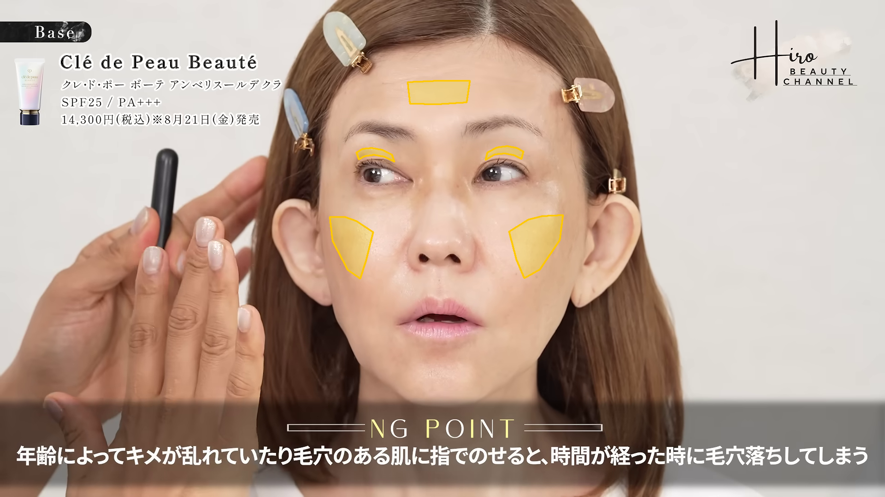
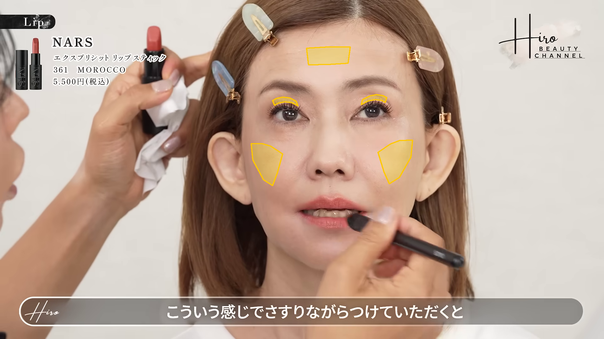
| 指標 | 単位 | before | after | 差 | 状態 |
|---|---|---|---|---|---|
| 画面左眉下の皮膚の細かな質感コントラスト（中央値） | 局所L*比 % | 0.225 | 1.109 | +0.884 | ok |
| 画面左眉下の皮膚の細かな質感コントラスト（p90） | 局所L*比 % | 0.645 | 5.248 | +4.602 | ok |
| 画面右眉下の皮膚の細かな質感コントラスト（中央値） | 局所L*比 % | 0.160 | 0.939 | +0.779 | ok |
| 画面右眉下の皮膚の細かな質感コントラスト（p90） | 局所L*比 % | 0.470 | 4.740 | +4.270 | ok |
| 画面左頬の細かな質感コントラスト（中央値・対照） | 局所L*比 % | 0.177 | 0.170 | -0.007 | ok |
| 画面左頬の細かな質感コントラスト（p90・対照） | 局所L*比 % | 0.578 | 0.461 | -0.117 | ok |
| 画面右頬の細かな質感コントラスト（中央値・対照） | 局所L*比 % | 0.154 | 0.126 | -0.027 | ok |
| 画面右頬の細かな質感コントラスト（p90・対照） | 局所L*比 % | 0.412 | 0.351 | -0.061 | ok |
| 額の細かな質感コントラスト（中央値・対照） | 局所L*比 % | 0.055 | 0.086 | +0.031 | ok |
| 額の細かな質感コントラスト（p90・対照） | 局所L*比 % | 0.221 | 0.316 | +0.095 | ok |
| 画面左眉下の皮膚のSEsc-inspired bright-scaliness率 | % | 0.000 | 0.000 | +0.000 | ok |
| 画面右眉下の皮膚のSEsc-inspired bright-scaliness率 | % | 0.000 | 0.000 | +0.000 | ok |
| 画面左頬・対照のSEsc-inspired bright-scaliness率 | % | 0.000 | 0.000 | +0.000 | ok |
| 画面右頬・対照のSEsc-inspired bright-scaliness率 | % | 0.000 | 0.000 | +0.000 | ok |
| 額・対照のSEsc-inspired bright-scaliness率 | % | 0.000 | 0.000 | +0.000 | ok |
| 画面左眉下の皮膚のGVR-inspired皮膚水分反射比 | ratio | 8.394e-07 | 2.071e-08 | -8.187e-07 | ok |
| 画面右眉下の皮膚のGVR-inspired皮膚水分反射比 | ratio | 2.592e-07 | 6.984e-07 | +4.392e-07 | ok |
| 画面左頬・対照のGVR-inspired皮膚水分反射比 | ratio | 8.856e-07 | 6.772e-07 | -2.084e-07 | ok |
| 画面右頬・対照のGVR-inspired皮膚水分反射比 | ratio | 7.028e-07 | 1.913e-07 | -5.115e-07 | ok |
| 額・対照のGVR-inspired皮膚水分反射比 | ratio | 2.408e-08 | 8.789e-11 | -2.399e-08 | ok |
| 画面左ほうれい線候補の周囲皮膚比・暗さコントラスト（中央値） | 局所L*比 % | 0.000 | 0.000 | +0.000 | ok |
| 画面左ほうれい線候補の周囲皮膚比・暗さコントラスト（p90） | 局所L*比 % | 4.304 | 9.633 | +5.330 | ok |
| 画面右ほうれい線候補の周囲皮膚比・暗さコントラスト（中央値） | 局所L*比 % | 0.000 | 0.000 | +0.000 | ok |
| 画面右ほうれい線候補の周囲皮膚比・暗さコントラスト（p90） | 局所L*比 % | 7.768 | 1.772 | -5.996 | ok |
眉下の皮膚の質感・ほうれい線候補 / rank 6
score 1.4828 ／ before 212.50s → after 1406.99s
顔サイズ比 1.0142 ／ 手の重なり before 0.00% / after 0.00%
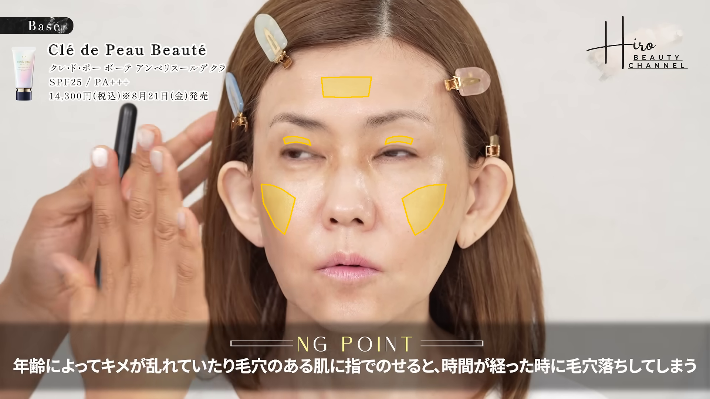
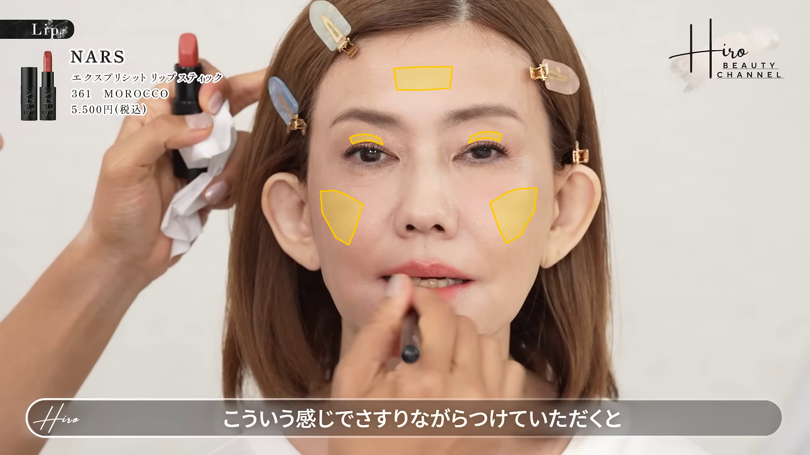
| 指標 | 単位 | before | after | 差 | 状態 |
|---|---|---|---|---|---|
| 画面左眉下の皮膚の細かな質感コントラスト（中央値） | 局所L*比 % | 0.293 | 0.382 | +0.088 | ok |
| 画面左眉下の皮膚の細かな質感コントラスト（p90） | 局所L*比 % | 1.017 | 2.319 | +1.301 | ok |
| 画面右眉下の皮膚の細かな質感コントラスト（中央値） | 局所L*比 % | 0.159 | 0.491 | +0.331 | ok |
| 画面右眉下の皮膚の細かな質感コントラスト（p90） | 局所L*比 % | 0.500 | 1.815 | +1.315 | ok |
| 画面左頬の細かな質感コントラスト（中央値・対照） | 局所L*比 % | 0.178 | 0.166 | -0.011 | ok |
| 画面左頬の細かな質感コントラスト（p90・対照） | 局所L*比 % | 0.468 | 0.486 | +0.018 | ok |
| 画面右頬の細かな質感コントラスト（中央値・対照） | 局所L*比 % | 0.143 | 0.125 | -0.019 | ok |
| 画面右頬の細かな質感コントラスト（p90・対照） | 局所L*比 % | 0.406 | 0.350 | -0.055 | ok |
| 額の細かな質感コントラスト（中央値・対照） | 局所L*比 % | 0.054 | 0.042 | -0.012 | ok |
| 額の細かな質感コントラスト（p90・対照） | 局所L*比 % | 0.264 | 0.198 | -0.065 | ok |
| 画面左眉下の皮膚のSEsc-inspired bright-scaliness率 | % | 0.000 | 0.000 | +0.000 | ok |
| 画面右眉下の皮膚のSEsc-inspired bright-scaliness率 | % | 0.000 | 0.000 | +0.000 | ok |
| 画面左頬・対照のSEsc-inspired bright-scaliness率 | % | 0.000 | 0.000 | +0.000 | ok |
| 画面右頬・対照のSEsc-inspired bright-scaliness率 | % | 0.000 | 0.000 | +0.000 | ok |
| 額・対照のSEsc-inspired bright-scaliness率 | % | 0.000 | 0.000 | +0.000 | ok |
| 画面左眉下の皮膚のGVR-inspired皮膚水分反射比 | ratio | 1.442e-06 | 9.629e-09 | -1.432e-06 | ok |
| 画面右眉下の皮膚のGVR-inspired皮膚水分反射比 | ratio | 6.064e-07 | 5.051e-08 | -5.559e-07 | ok |
| 画面左頬・対照のGVR-inspired皮膚水分反射比 | ratio | 1.098e-06 | 6.099e-07 | -4.877e-07 | ok |
| 画面右頬・対照のGVR-inspired皮膚水分反射比 | ratio | 4.302e-07 | 1.837e-07 | -2.465e-07 | ok |
| 額・対照のGVR-inspired皮膚水分反射比 | ratio | 3.089e-11 | 3.724e-09 | +3.693e-09 | ok |
| 画面左ほうれい線候補の周囲皮膚比・暗さコントラスト（中央値） | 局所L*比 % | 0.000 | 0.000 | +0.000 | ok |
| 画面左ほうれい線候補の周囲皮膚比・暗さコントラスト（p90） | 局所L*比 % | 6.066 | 10.206 | +4.140 | ok |
| 画面右ほうれい線候補の周囲皮膚比・暗さコントラスト（中央値） | 局所L*比 % | 0.000 | 0.000 | +0.000 | ok |
| 画面右ほうれい線候補の周囲皮膚比・暗さコントラスト（p90） | 局所L*比 % | 9.501 | 3.083 | -6.418 | ok |
眉下の皮膚の質感・ほうれい線候補 / rank 7
score 1.4982 ／ before 228.02s → after 1411.99s
顔サイズ比 1.0232 ／ 手の重なり before 0.00% / after 0.00%
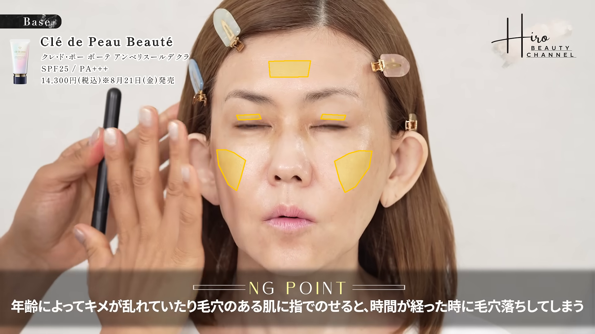
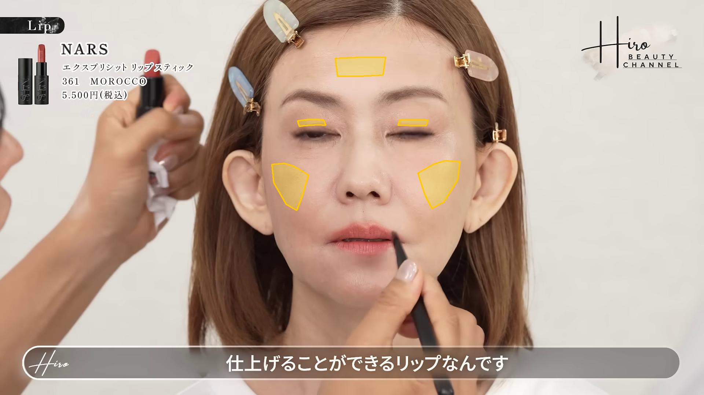
| 指標 | 単位 | before | after | 差 | 状態 |
|---|---|---|---|---|---|
| 画面左眉下の皮膚の細かな質感コントラスト（中央値） | 局所L*比 % | 0.261 | 0.267 | +0.006 | ok |
| 画面左眉下の皮膚の細かな質感コントラスト（p90） | 局所L*比 % | 0.723 | 0.695 | -0.029 | ok |
| 画面右眉下の皮膚の細かな質感コントラスト（中央値） | 局所L*比 % | 0.200 | 0.172 | -0.029 | ok |
| 画面右眉下の皮膚の細かな質感コントラスト（p90） | 局所L*比 % | 0.739 | 0.455 | -0.285 | ok |
| 画面左頬の細かな質感コントラスト（中央値・対照） | 局所L*比 % | 0.170 | 0.179 | +0.009 | ok |
| 画面左頬の細かな質感コントラスト（p90・対照） | 局所L*比 % | 0.532 | 0.551 | +0.019 | ok |
| 画面右頬の細かな質感コントラスト（中央値・対照） | 局所L*比 % | 0.148 | 0.117 | -0.030 | ok |
| 画面右頬の細かな質感コントラスト（p90・対照） | 局所L*比 % | 0.422 | 0.325 | -0.097 | ok |
| 額の細かな質感コントラスト（中央値・対照） | 局所L*比 % | 0.093 | 0.049 | -0.044 | ok |
| 額の細かな質感コントラスト（p90・対照） | 局所L*比 % | 0.318 | 0.204 | -0.114 | ok |
| 画面左眉下の皮膚のSEsc-inspired bright-scaliness率 | % | 0.000 | 0.000 | +0.000 | ok |
| 画面右眉下の皮膚のSEsc-inspired bright-scaliness率 | % | 0.000 | 0.000 | +0.000 | ok |
| 画面左頬・対照のSEsc-inspired bright-scaliness率 | % | 0.000 | 0.000 | +0.000 | ok |
| 画面右頬・対照のSEsc-inspired bright-scaliness率 | % | 0.000 | 0.000 | +0.000 | ok |
| 額・対照のSEsc-inspired bright-scaliness率 | % | 0.000 | 0.000 | +0.000 | ok |
| 画面左眉下の皮膚のGVR-inspired皮膚水分反射比 | ratio | 2.293e-06 | 2.861e-07 | -2.007e-06 | ok |
| 画面右眉下の皮膚のGVR-inspired皮膚水分反射比 | ratio | 8.555e-07 | 8.556e-07 | +1.175e-10 | ok |
| 画面左頬・対照のGVR-inspired皮膚水分反射比 | ratio | 8.193e-07 | 5.215e-07 | -2.978e-07 | ok |
| 画面右頬・対照のGVR-inspired皮膚水分反射比 | ratio | 7.388e-07 | 2.812e-07 | -4.576e-07 | ok |
| 額・対照のGVR-inspired皮膚水分反射比 | ratio | 4.603e-08 | 0.000 | -4.603e-08 | ok |
| 画面左ほうれい線候補の周囲皮膚比・暗さコントラスト（中央値） | 局所L*比 % | 0.000 | 0.000 | +0.000 | ok |
| 画面左ほうれい線候補の周囲皮膚比・暗さコントラスト（p90） | 局所L*比 % | 3.070 | 6.991 | +3.921 | ok |
| 画面右ほうれい線候補の周囲皮膚比・暗さコントラスト（中央値） | 局所L*比 % | 0.000 | 0.000 | +0.000 | ok |
| 画面右ほうれい線候補の周囲皮膚比・暗さコントラスト（p90） | 局所L*比 % | 9.316 | 3.552 | -5.764 | ok |
眉下の皮膚の質感・ほうれい線候補 / rank 8
score 1.7270 ／ before 222.01s → after 1407.99s
顔サイズ比 1.0240 ／ 手の重なり before 0.00% / after 0.00%
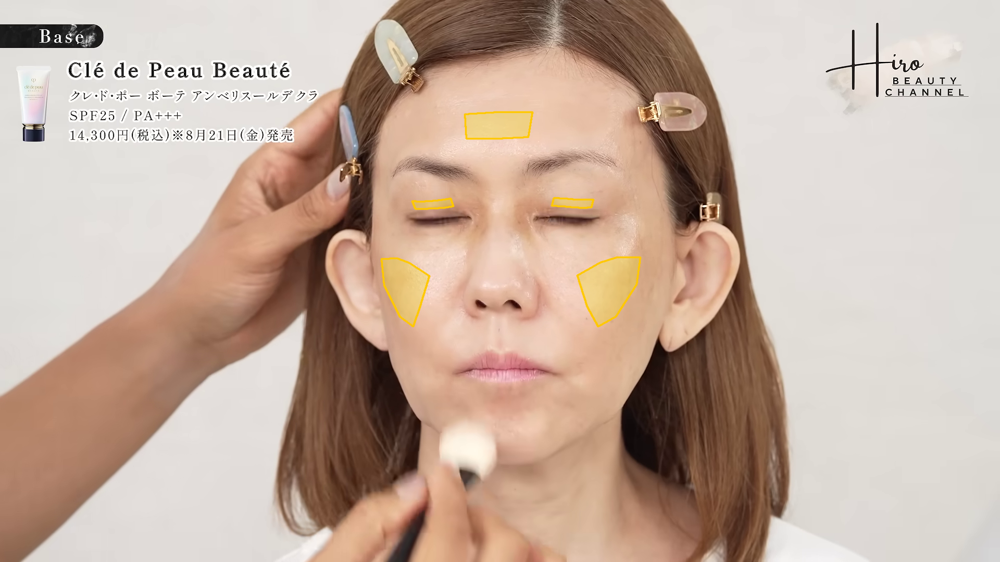
| 指標 | 単位 | before | after | 差 | 状態 |
|---|---|---|---|---|---|
| 画面左眉下の皮膚の細かな質感コントラスト（中央値） | 局所L*比 % | 0.238 | 0.739 | +0.501 | ok |
| 画面左眉下の皮膚の細かな質感コントラスト（p90） | 局所L*比 % | 0.594 | 2.860 | +2.266 | ok |
| 画面右眉下の皮膚の細かな質感コントラスト（中央値） | 局所L*比 % | 0.205 | 0.613 | +0.409 | ok |
| 画面右眉下の皮膚の細かな質感コントラスト（p90） | 局所L*比 % | 0.570 | 2.393 | +1.824 | ok |
| 画面左頬の細かな質感コントラスト（中央値・対照） | 局所L*比 % | 0.186 | 0.166 | -0.020 | ok |
| 画面左頬の細かな質感コントラスト（p90・対照） | 局所L*比 % | 0.691 | 0.484 | -0.207 | ok |
| 画面右頬の細かな質感コントラスト（中央値・対照） | 局所L*比 % | 0.141 | 0.120 | -0.021 | ok |
| 画面右頬の細かな質感コントラスト（p90・対照） | 局所L*比 % | 0.390 | 0.337 | -0.053 | ok |
| 額の細かな質感コントラスト（中央値・対照） | 局所L*比 % | 0.084 | 0.049 | -0.036 | ok |
| 額の細かな質感コントラスト（p90・対照） | 局所L*比 % | 0.313 | 0.183 | -0.130 | ok |
| 画面左眉下の皮膚のSEsc-inspired bright-scaliness率 | % | 0.000 | 0.000 | +0.000 | ok |
| 画面右眉下の皮膚のSEsc-inspired bright-scaliness率 | % | 0.000 | 0.000 | +0.000 | ok |
| 画面左頬・対照のSEsc-inspired bright-scaliness率 | % | 0.000 | 0.000 | +0.000 | ok |
| 画面右頬・対照のSEsc-inspired bright-scaliness率 | % | 0.000 | 0.000 | +0.000 | ok |
| 額・対照のSEsc-inspired bright-scaliness率 | % | 0.000 | 0.000 | +0.000 | ok |
| 画面左眉下の皮膚のGVR-inspired皮膚水分反射比 | ratio | 2.587e-06 | 3.938e-07 | -2.193e-06 | ok |
| 画面右眉下の皮膚のGVR-inspired皮膚水分反射比 | ratio | 1.287e-06 | 7.519e-07 | -5.355e-07 | ok |
| 画面左頬・対照のGVR-inspired皮膚水分反射比 | ratio | 9.345e-07 | 6.419e-07 | -2.925e-07 | ok |
| 画面右頬・対照のGVR-inspired皮膚水分反射比 | ratio | 5.849e-07 | 1.885e-07 | -3.964e-07 | ok |
| 額・対照のGVR-inspired皮膚水分反射比 | ratio | 9.760e-10 | 4.315e-09 | +3.339e-09 | ok |
| 画面左ほうれい線候補の周囲皮膚比・暗さコントラスト（中央値） | 局所L*比 % | 0.000 | 0.000 | +0.000 | ok |
| 画面左ほうれい線候補の周囲皮膚比・暗さコントラスト（p90） | 局所L*比 % | 3.068 | 9.156 | +6.087 | ok |
| 画面右ほうれい線候補の周囲皮膚比・暗さコントラスト（中央値） | 局所L*比 % | 0.000 | 0.000 | +0.000 | ok |
| 画面右ほうれい線候補の周囲皮膚比・暗さコントラスト（p90） | 局所L*比 % | 9.526 | 2.793 | -6.733 | ok |
眉下の皮膚の質感・ほうれい線候補 / rank 9
score 1.7294 ／ before 216.51s → after 1412.99s
顔サイズ比 1.0168 ／ 手の重なり before 0.00% / after 0.00%
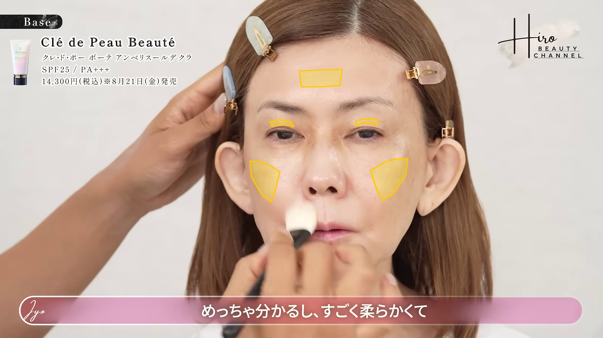
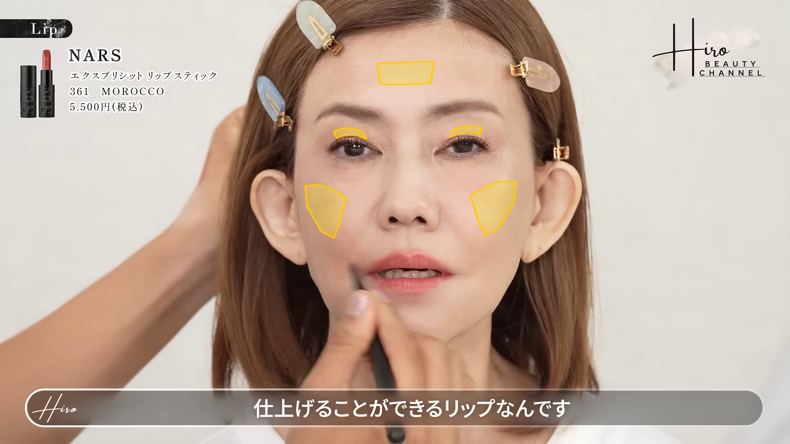
| 指標 | 単位 | before | after | 差 | 状態 |
|---|---|---|---|---|---|
| 画面左眉下の皮膚の細かな質感コントラスト（中央値） | 局所L*比 % | 0.300 | 0.314 | +0.014 | ok |
| 画面左眉下の皮膚の細かな質感コントラスト（p90） | 局所L*比 % | 1.114 | 1.638 | +0.524 | ok |
| 画面右眉下の皮膚の細かな質感コントラスト（中央値） | 局所L*比 % | 0.246 | 0.206 | -0.040 | ok |
| 画面右眉下の皮膚の細かな質感コントラスト（p90） | 局所L*比 % | 0.901 | 0.653 | -0.249 | ok |
| 画面左頬の細かな質感コントラスト（中央値・対照） | 局所L*比 % | 0.151 | 0.172 | +0.020 | ok |
| 画面左頬の細かな質感コントラスト（p90・対照） | 局所L*比 % | 0.397 | 0.528 | +0.132 | ok |
| 画面右頬の細かな質感コントラスト（中央値・対照） | 局所L*比 % | 0.161 | 0.124 | -0.038 | ok |
| 画面右頬の細かな質感コントラスト（p90・対照） | 局所L*比 % | 0.461 | 0.349 | -0.112 | ok |
| 額の細かな質感コントラスト（中央値・対照） | 局所L*比 % | 0.053 | 0.044 | -0.009 | ok |
| 額の細かな質感コントラスト（p90・対照） | 局所L*比 % | 0.283 | 0.195 | -0.088 | ok |
| 画面左眉下の皮膚のSEsc-inspired bright-scaliness率 | % | 0.000 | 0.000 | +0.000 | ok |
| 画面右眉下の皮膚のSEsc-inspired bright-scaliness率 | % | 0.000 | 0.000 | +0.000 | ok |
| 画面左頬・対照のSEsc-inspired bright-scaliness率 | % | 0.000 | 0.000 | +0.000 | ok |
| 画面右頬・対照のSEsc-inspired bright-scaliness率 | % | 0.000 | 0.000 | +0.000 | ok |
| 額・対照のSEsc-inspired bright-scaliness率 | % | 0.000 | 0.000 | +0.000 | ok |
| 画面左眉下の皮膚のGVR-inspired皮膚水分反射比 | ratio | 7.975e-07 | 3.783e-08 | -7.597e-07 | ok |
| 画面右眉下の皮膚のGVR-inspired皮膚水分反射比 | ratio | 2.094e-07 | 1.265e-07 | -8.283e-08 | ok |
| 画面左頬・対照のGVR-inspired皮膚水分反射比 | ratio | 1.374e-06 | 6.021e-07 | -7.723e-07 | ok |
| 画面右頬・対照のGVR-inspired皮膚水分反射比 | ratio | 5.654e-07 | 3.153e-07 | -2.501e-07 | ok |
| 額・対照のGVR-inspired皮膚水分反射比 | ratio | 3.406e-08 | 0.000 | -3.406e-08 | ok |
| 画面左ほうれい線候補の周囲皮膚比・暗さコントラスト（中央値） | 局所L*比 % | 0.000 | 0.000 | +0.000 | ok |
| 画面左ほうれい線候補の周囲皮膚比・暗さコントラスト（p90） | 局所L*比 % | 0.000 | 9.625 | +9.625 | ok |
| 画面右ほうれい線候補の周囲皮膚比・暗さコントラスト（中央値） | 局所L*比 % | 0.000 | 0.000 | +0.000 | ok |
| 画面右ほうれい線候補の周囲皮膚比・暗さコントラスト（p90） | 局所L*比 % | 7.652 | 3.524 | -4.128 | ok |
眉下の皮膚の質感・ほうれい線候補 / rank 10
score 1.7814 ／ before 227.02s → after 1401.98s
顔サイズ比 1.0179 ／ 手の重なり before 0.00% / after 0.00%
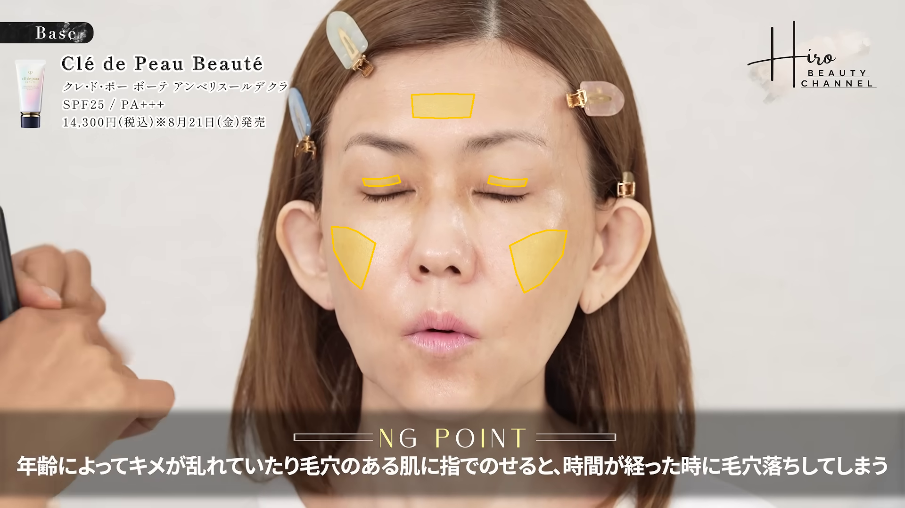
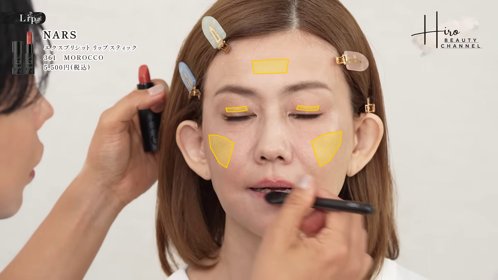
| 指標 | 単位 | before | after | 差 | 状態 |
|---|---|---|---|---|---|
| 画面左眉下の皮膚の細かな質感コントラスト（中央値） | 局所L*比 % | 0.266 | 0.501 | +0.235 | ok |
| 画面左眉下の皮膚の細かな質感コントラスト（p90） | 局所L*比 % | 0.670 | 1.398 | +0.728 | ok |
| 画面右眉下の皮膚の細かな質感コントラスト（中央値） | 局所L*比 % | 0.248 | 0.327 | +0.080 | ok |
| 画面右眉下の皮膚の細かな質感コントラスト（p90） | 局所L*比 % | 0.609 | 0.904 | +0.295 | ok |
| 画面左頬の細かな質感コントラスト（中央値・対照） | 局所L*比 % | 0.167 | 0.206 | +0.039 | ok |
| 画面左頬の細かな質感コントラスト（p90・対照） | 局所L*比 % | 0.662 | 0.618 | -0.044 | ok |
| 画面右頬の細かな質感コントラスト（中央値・対照） | 局所L*比 % | 0.144 | 0.176 | +0.033 | ok |
| 画面右頬の細かな質感コントラスト（p90・対照） | 局所L*比 % | 0.401 | 0.493 | +0.091 | ok |
| 額の細かな質感コントラスト（中央値・対照） | 局所L*比 % | 0.118 | 0.076 | -0.042 | ok |
| 額の細かな質感コントラスト（p90・対照） | 局所L*比 % | 0.412 | 0.286 | -0.125 | ok |
| 画面左眉下の皮膚のSEsc-inspired bright-scaliness率 | % | 0.000 | 0.000 | +0.000 | ok |
| 画面右眉下の皮膚のSEsc-inspired bright-scaliness率 | % | 0.000 | 0.000 | +0.000 | ok |
| 画面左頬・対照のSEsc-inspired bright-scaliness率 | % | 0.000 | 0.000 | +0.000 | ok |
| 画面右頬・対照のSEsc-inspired bright-scaliness率 | % | 0.000 | 0.000 | +0.000 | ok |
| 額・対照のSEsc-inspired bright-scaliness率 | % | 0.000 | 0.000 | +0.000 | ok |
| 画面左眉下の皮膚のGVR-inspired皮膚水分反射比 | ratio | 2.503e-06 | 1.581e-06 | -9.214e-07 | ok |
| 画面右眉下の皮膚のGVR-inspired皮膚水分反射比 | ratio | 1.805e-06 | 2.378e-06 | +5.732e-07 | ok |
| 画面左頬・対照のGVR-inspired皮膚水分反射比 | ratio | 1.082e-06 | 1.069e-06 | -1.316e-08 | ok |
| 画面右頬・対照のGVR-inspired皮膚水分反射比 | ratio | 8.021e-07 | 2.973e-07 | -5.048e-07 | ok |
| 額・対照のGVR-inspired皮膚水分反射比 | ratio | 3.936e-08 | 0.000 | -3.936e-08 | ok |
| 画面左ほうれい線候補の周囲皮膚比・暗さコントラスト（中央値） | 局所L*比 % | 0.000 | 0.000 | +0.000 | ok |
| 画面左ほうれい線候補の周囲皮膚比・暗さコントラスト（p90） | 局所L*比 % | 3.345 | 9.957 | +6.613 | ok |
| 画面右ほうれい線候補の周囲皮膚比・暗さコントラスト（中央値） | 局所L*比 % | 0.000 | 0.000 | +0.000 | ok |
| 画面右ほうれい線候補の周囲皮膚比・暗さコントラスト（p90） | 局所L*比 % | 8.932 | 3.095 | -5.837 | ok |
眉下の皮膚の質感・ほうれい線候補 / rank 11
score 2.2609 ／ before 213.00s → after 1409.99s
顔サイズ比 1.0181 ／ 手の重なり before 0.00% / after 0.00%
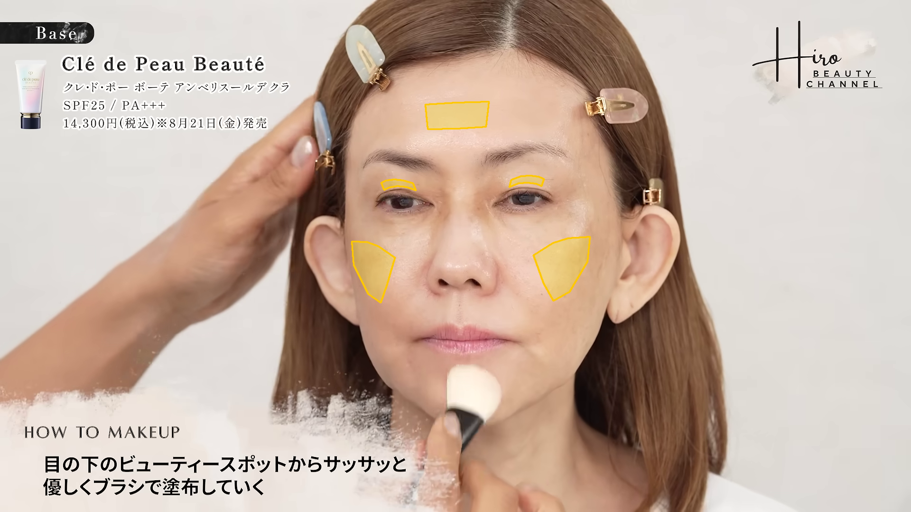
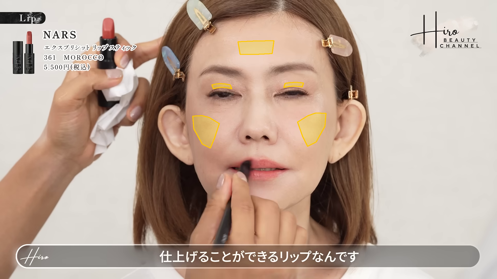
| 指標 | 単位 | before | after | 差 | 状態 |
|---|---|---|---|---|---|
| 画面左眉下の皮膚の細かな質感コントラスト（中央値） | 局所L*比 % | 0.234 | 0.258 | +0.024 | ok |
| 画面左眉下の皮膚の細かな質感コントラスト（p90） | 局所L*比 % | 0.748 | 1.799 | +1.051 | ok |
| 画面右眉下の皮膚の細かな質感コントラスト（中央値） | 局所L*比 % | 0.175 | 0.192 | +0.017 | ok |
| 画面右眉下の皮膚の細かな質感コントラスト（p90） | 局所L*比 % | 0.499 | 0.809 | +0.310 | ok |
| 画面左頬の細かな質感コントラスト（中央値・対照） | 局所L*比 % | 0.221 | 0.171 | -0.049 | ok |
| 画面左頬の細かな質感コントラスト（p90・対照） | 局所L*比 % | 0.611 | 0.506 | -0.105 | ok |
| 画面右頬の細かな質感コントラスト（中央値・対照） | 局所L*比 % | 0.148 | 0.124 | -0.024 | ok |
| 画面右頬の細かな質感コントラスト（p90・対照） | 局所L*比 % | 0.445 | 0.373 | -0.072 | ok |
| 額の細かな質感コントラスト（中央値・対照） | 局所L*比 % | 0.083 | 0.044 | -0.039 | ok |
| 額の細かな質感コントラスト（p90・対照） | 局所L*比 % | 0.285 | 0.186 | -0.098 | ok |
| 画面左眉下の皮膚のSEsc-inspired bright-scaliness率 | % | 0.000 | 0.000 | +0.000 | ok |
| 画面右眉下の皮膚のSEsc-inspired bright-scaliness率 | % | 0.000 | 0.000 | +0.000 | ok |
| 画面左頬・対照のSEsc-inspired bright-scaliness率 | % | 0.000 | 0.000 | +0.000 | ok |
| 画面右頬・対照のSEsc-inspired bright-scaliness率 | % | 0.000 | 0.000 | +0.000 | ok |
| 額・対照のSEsc-inspired bright-scaliness率 | % | 0.000 | 0.000 | +0.000 | ok |
| 画面左眉下の皮膚のGVR-inspired皮膚水分反射比 | ratio | 1.191e-06 | 1.640e-07 | -1.027e-06 | ok |
| 画面右眉下の皮膚のGVR-inspired皮膚水分反射比 | ratio | 5.218e-07 | 1.265e-07 | -3.952e-07 | ok |
| 画面左頬・対照のGVR-inspired皮膚水分反射比 | ratio | 8.186e-07 | 5.546e-07 | -2.640e-07 | ok |
| 画面右頬・対照のGVR-inspired皮膚水分反射比 | ratio | 3.628e-07 | 2.895e-07 | -7.328e-08 | ok |
| 額・対照のGVR-inspired皮膚水分反射比 | ratio | 8.441e-12 | 0.000 | -8.441e-12 | ok |
| 画面左ほうれい線候補の周囲皮膚比・暗さコントラスト（中央値） | 局所L*比 % | 0.000 | 0.000 | +0.000 | ok |
| 画面左ほうれい線候補の周囲皮膚比・暗さコントラスト（p90） | 局所L*比 % | 7.983 | 9.551 | +1.569 | ok |
| 画面右ほうれい線候補の周囲皮膚比・暗さコントラスト（中央値） | 局所L*比 % | 0.000 | 0.000 | +0.000 | ok |
| 画面右ほうれい線候補の周囲皮膚比・暗さコントラスト（p90） | 局所L*比 % | 9.231 | 3.501 | -5.730 | ok |
眉下の皮膚の質感・ほうれい線候補 / rank 12
score 2.3249 ／ before 211.00s → after 1402.48s
顔サイズ比 1.0122 ／ 手の重なり before 0.00% / after 0.00%
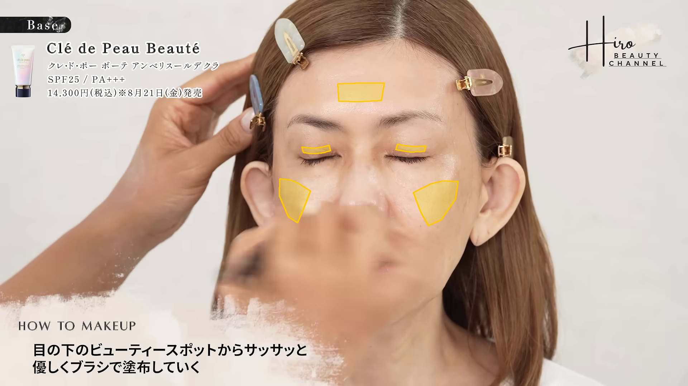
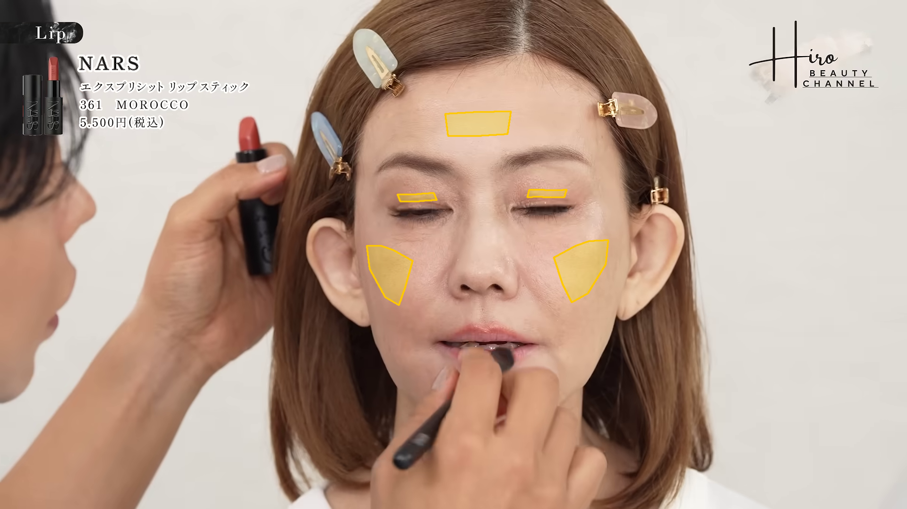
| 指標 | 単位 | before | after | 差 | 状態 |
|---|---|---|---|---|---|
| 画面左眉下の皮膚の細かな質感コントラスト（中央値） | 局所L*比 % | 0.482 | 0.545 | +0.063 | ok |
| 画面左眉下の皮膚の細かな質感コントラスト（p90） | 局所L*比 % | 2.024 | 1.785 | -0.238 | ok |
| 画面右眉下の皮膚の細かな質感コントラスト（中央値） | 局所L*比 % | 0.373 | 0.391 | +0.018 | ok |
| 画面右眉下の皮膚の細かな質感コントラスト（p90） | 局所L*比 % | 1.366 | 1.247 | -0.119 | ok |
| 画面左頬の細かな質感コントラスト（中央値・対照） | 局所L*比 % | 0.150 | 0.231 | +0.081 | ok |
| 画面左頬の細かな質感コントラスト（p90・対照） | 局所L*比 % | 0.378 | 0.784 | +0.406 | ok |
| 画面右頬の細かな質感コントラスト（中央値・対照） | 局所L*比 % | 0.165 | 0.196 | +0.030 | ok |
| 画面右頬の細かな質感コントラスト（p90・対照） | 局所L*比 % | 0.533 | 0.566 | +0.033 | ok |
| 額の細かな質感コントラスト（中央値・対照） | 局所L*比 % | 0.073 | 0.072 | -0.001 | ok |
| 額の細かな質感コントラスト（p90・対照） | 局所L*比 % | 0.362 | 0.298 | -0.064 | ok |
| 画面左眉下の皮膚のSEsc-inspired bright-scaliness率 | % | 0.000 | 0.000 | +0.000 | ok |
| 画面右眉下の皮膚のSEsc-inspired bright-scaliness率 | % | 0.000 | 0.000 | +0.000 | ok |
| 画面左頬・対照のSEsc-inspired bright-scaliness率 | % | 0.000 | 0.000 | +0.000 | ok |
| 画面右頬・対照のSEsc-inspired bright-scaliness率 | % | 0.000 | 0.000 | +0.000 | ok |
| 額・対照のSEsc-inspired bright-scaliness率 | % | 0.000 | 0.000 | +0.000 | ok |
| 画面左眉下の皮膚のGVR-inspired皮膚水分反射比 | ratio | 1.989e-06 | 1.832e-06 | -1.567e-07 | ok |
| 画面右眉下の皮膚のGVR-inspired皮膚水分反射比 | ratio | 1.571e-06 | 1.862e-06 | +2.909e-07 | ok |
| 画面左頬・対照のGVR-inspired皮膚水分反射比 | ratio | 1.005e-06 | 7.801e-07 | -2.251e-07 | ok |
| 画面右頬・対照のGVR-inspired皮膚水分反射比 | ratio | 3.316e-07 | 2.300e-07 | -1.016e-07 | ok |
| 額・対照のGVR-inspired皮膚水分反射比 | ratio | 4.193e-09 | 0.000 | -4.193e-09 | ok |
| 画面左ほうれい線候補の周囲皮膚比・暗さコントラスト（中央値） | 局所L*比 % | 0.000 | 0.000 | +0.000 | ok |
| 画面左ほうれい線候補の周囲皮膚比・暗さコントラスト（p90） | 局所L*比 % | 0.000 | 8.889 | +8.889 | ok |
| 画面右ほうれい線候補の周囲皮膚比・暗さコントラスト（中央値） | 局所L*比 % | 8.786 | 0.000 | -8.786 | ok |
| 画面右ほうれい線候補の周囲皮膚比・暗さコントラスト（p90） | 局所L*比 % | 13.211 | 4.299 | -8.912 | ok |
眉下の皮膚の質感・ほうれい線候補 / rank 13
score 2.4648 ／ before 221.01s → after 1418.00s
顔サイズ比 1.0136 ／ 手の重なり before 0.00% / after 0.00%
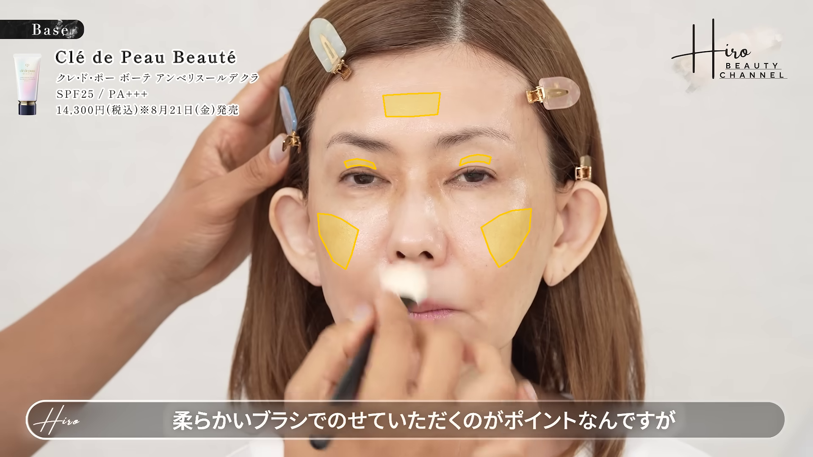
| 指標 | 単位 | before | after | 差 | 状態 |
|---|---|---|---|---|---|
| 画面左眉下の皮膚の細かな質感コントラスト（中央値） | 局所L*比 % | 0.263 | 0.172 | -0.092 | ok |
| 画面左眉下の皮膚の細かな質感コントラスト（p90） | 局所L*比 % | 1.103 | 0.511 | -0.593 | ok |
| 画面右眉下の皮膚の細かな質感コントラスト（中央値） | 局所L*比 % | 0.150 | 0.193 | +0.043 | ok |
| 画面右眉下の皮膚の細かな質感コントラスト（p90） | 局所L*比 % | 0.431 | 0.486 | +0.055 | ok |
| 画面左頬の細かな質感コントラスト（中央値・対照） | 局所L*比 % | 0.193 | 0.139 | -0.054 | ok |
| 画面左頬の細かな質感コントラスト（p90・対照） | 局所L*比 % | 1.058 | 0.343 | -0.715 | ok |
| 画面右頬の細かな質感コントラスト（中央値・対照） | 局所L*比 % | 0.197 | 0.121 | -0.076 | ok |
| 画面右頬の細かな質感コントラスト（p90・対照） | 局所L*比 % | 0.550 | 0.302 | -0.248 | ok |
| 額の細かな質感コントラスト（中央値・対照） | 局所L*比 % | 0.094 | 0.097 | +0.003 | ok |
| 額の細かな質感コントラスト（p90・対照） | 局所L*比 % | 0.375 | 0.265 | -0.109 | ok |
| 画面左眉下の皮膚のSEsc-inspired bright-scaliness率 | % | 0.000 | 0.000 | +0.000 | ok |
| 画面右眉下の皮膚のSEsc-inspired bright-scaliness率 | % | 0.000 | 0.000 | +0.000 | ok |
| 画面左頬・対照のSEsc-inspired bright-scaliness率 | % | 0.000 | 0.000 | +0.000 | ok |
| 画面右頬・対照のSEsc-inspired bright-scaliness率 | % | 0.000 | 0.000 | +0.000 | ok |
| 額・対照のSEsc-inspired bright-scaliness率 | % | 0.000 | 0.000 | +0.000 | ok |
| 画面左眉下の皮膚のGVR-inspired皮膚水分反射比 | ratio | 1.739e-06 | 1.970e-07 | -1.542e-06 | ok |
| 画面右眉下の皮膚のGVR-inspired皮膚水分反射比 | ratio | 6.788e-07 | 3.674e-08 | -6.421e-07 | ok |
| 画面左頬・対照のGVR-inspired皮膚水分反射比 | ratio | 1.311e-06 | 5.752e-07 | -7.357e-07 | ok |
| 画面右頬・対照のGVR-inspired皮膚水分反射比 | ratio | 6.140e-07 | 5.060e-07 | -1.079e-07 | ok |
| 額・対照のGVR-inspired皮膚水分反射比 | ratio | 5.620e-10 | 1.814e-07 | +1.808e-07 | ok |
| 画面左ほうれい線候補の周囲皮膚比・暗さコントラスト（中央値） | 局所L*比 % | 0.000 | 1.432 | +1.432 | ok |
| 画面左ほうれい線候補の周囲皮膚比・暗さコントラスト（p90） | 局所L*比 % | 4.084 | 3.609 | -0.476 | ok |
| 画面右ほうれい線候補の周囲皮膚比・暗さコントラスト（中央値） | 局所L*比 % | 0.000 | 0.931 | +0.931 | ok |
| 画面右ほうれい線候補の周囲皮膚比・暗さコントラスト（p90） | 局所L*比 % | 3.720 | 5.830 | +2.110 | ok |
眉下の皮膚の質感・ほうれい線候補 / rank 14
score 2.8392 ／ before 238.99s → after 1421.00s
顔サイズ比 1.0102 ／ 手の重なり before 0.00% / after 0.00%
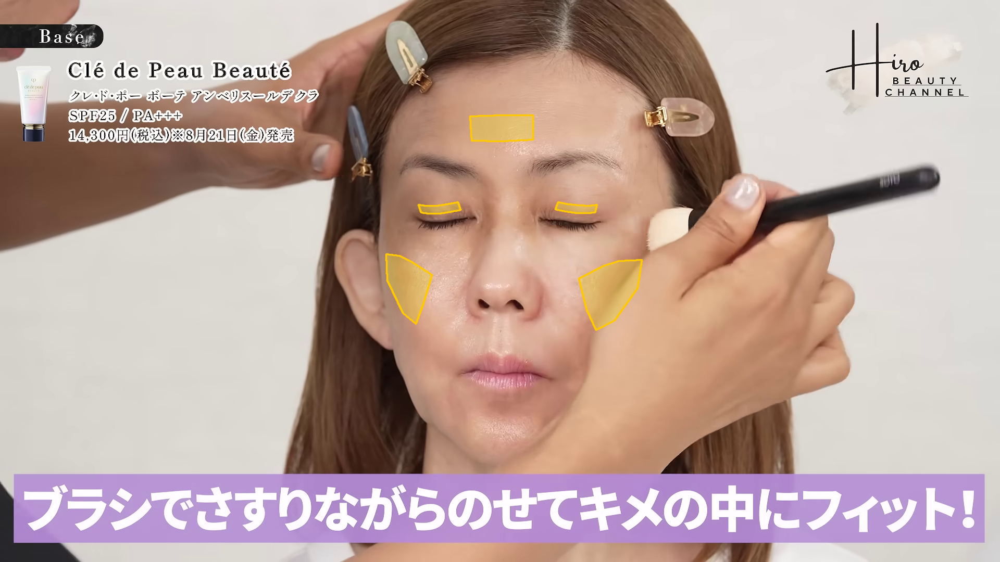
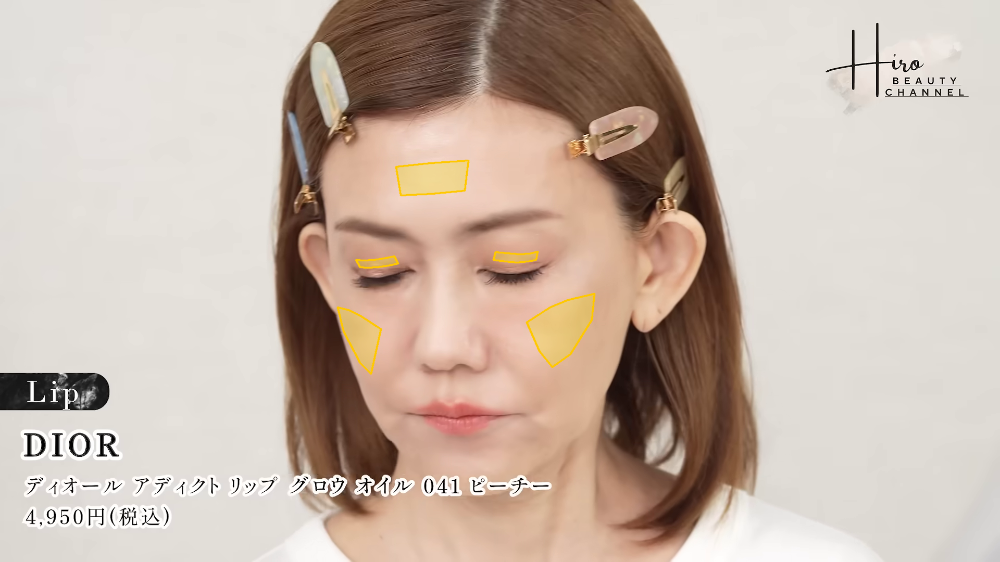
| 指標 | 単位 | before | after | 差 | 状態 |
|---|---|---|---|---|---|
| 画面左眉下の皮膚の細かな質感コントラスト（中央値） | 局所L*比 % | 0.432 | 0.255 | -0.176 | ok |
| 画面左眉下の皮膚の細かな質感コントラスト（p90） | 局所L*比 % | 1.175 | 1.205 | +0.030 | ok |
| 画面右眉下の皮膚の細かな質感コントラスト（中央値） | 局所L*比 % | 0.205 | 0.194 | -0.011 | ok |
| 画面右眉下の皮膚の細かな質感コントラスト（p90） | 局所L*比 % | 0.555 | 0.518 | -0.037 | ok |
| 画面左頬の細かな質感コントラスト（中央値・対照） | 局所L*比 % | 0.248 | 0.116 | -0.132 | ok |
| 画面左頬の細かな質感コントラスト（p90・対照） | 局所L*比 % | 1.002 | 0.268 | -0.734 | ok |
| 画面右頬の細かな質感コントラスト（中央値・対照） | 局所L*比 % | 0.193 | 0.120 | -0.073 | ok |
| 画面右頬の細かな質感コントラスト（p90・対照） | 局所L*比 % | 0.535 | 0.299 | -0.237 | ok |
| 額の細かな質感コントラスト（中央値・対照） | 局所L*比 % | 0.204 | 0.069 | -0.134 | ok |
| 額の細かな質感コントラスト（p90・対照） | 局所L*比 % | 0.984 | 0.240 | -0.744 | ok |
| 画面左眉下の皮膚のSEsc-inspired bright-scaliness率 | % | 0.000 | 0.000 | +0.000 | ok |
| 画面右眉下の皮膚のSEsc-inspired bright-scaliness率 | % | 0.000 | 0.000 | +0.000 | ok |
| 画面左頬・対照のSEsc-inspired bright-scaliness率 | % | 0.000 | 0.000 | +0.000 | ok |
| 画面右頬・対照のSEsc-inspired bright-scaliness率 | % | 0.000 | 0.000 | +0.000 | ok |
| 額・対照のSEsc-inspired bright-scaliness率 | % | 0.000 | 0.000 | +0.000 | ok |
| 画面左眉下の皮膚のGVR-inspired皮膚水分反射比 | ratio | 1.005e-06 | 1.421e-06 | +4.163e-07 | ok |
| 画面右眉下の皮膚のGVR-inspired皮膚水分反射比 | ratio | 2.415e-06 | 1.700e-06 | -7.150e-07 | ok |
| 画面左頬・対照のGVR-inspired皮膚水分反射比 | ratio | 1.153e-06 | 5.392e-07 | -6.136e-07 | ok |
| 画面右頬・対照のGVR-inspired皮膚水分反射比 | ratio | 1.812e-06 | 7.658e-07 | -1.046e-06 | ok |
| 額・対照のGVR-inspired皮膚水分反射比 | ratio | 0.000 | 3.930e-08 | +3.930e-08 | ok |
| 画面左ほうれい線候補の周囲皮膚比・暗さコントラスト（中央値） | 局所L*比 % | 0.000 | 0.000 | +0.000 | ok |
| 画面左ほうれい線候補の周囲皮膚比・暗さコントラスト（p90） | 局所L*比 % | 8.090 | 0.943 | -7.146 | ok |
| 画面右ほうれい線候補の周囲皮膚比・暗さコントラスト（中央値） | 局所L*比 % | 1.230 | 0.000 | -1.230 | ok |
| 画面右ほうれい線候補の周囲皮膚比・暗さコントラスト（p90） | 局所L*比 % | 14.524 | 7.562 | -6.962 | ok |